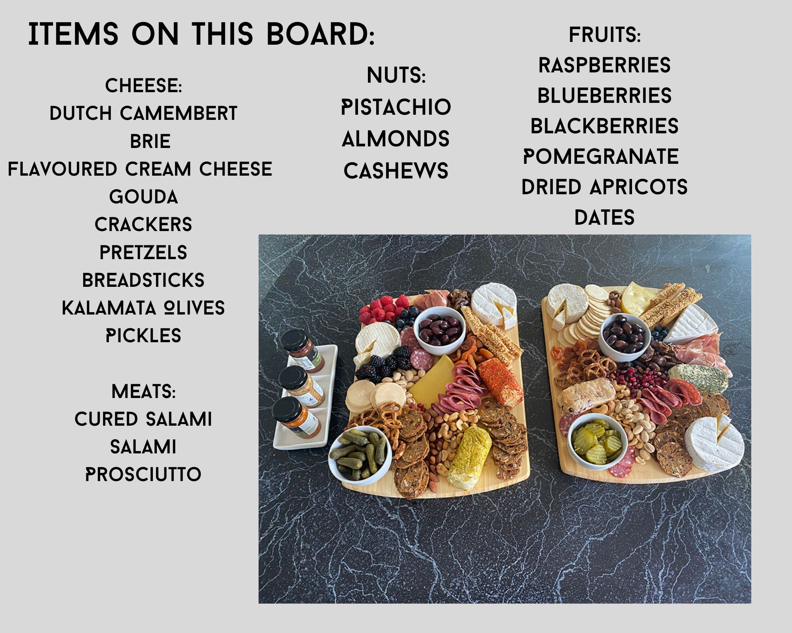

If you’ve ever entertained, you would understand how much of a struggle it is to get everyone a snack of their preference, that doesn’t require too much work on your part. It would be heaven if there was a way that you could just put things on a board and let people go nuts. Oh wait...There is!
Making a cheese board is a lot simpler than I thought it would’ve been, after collecting all the ingredients it's a fairly fast thing to complete. The best thing about it is knowing that it doesn't have to be perfect, I mean, you're probably not feeding Gordon Ramsay and the entire point is for it to be jumbled. It's also a pretty nice flex on that one person who always seems to think they’re a better entertainer than you…
Things that make a board
The overall purpose of a cheese board is to give your guests a range of textures, flavours and take them on a short, yet well loved culinary experience.
There are many ways that we can achieve this, the mains being to provide many textures and flavours, that can be easily interlinked to provide said experience. The two most important elements of the board are
meats
cheeses
These two things are the attributes of the cheese board that people will most likely look to first. (especially if they're vegan).
The best boards have something for everyone, after selecting both sweet and savoury, along with fruits your board is destined to be the talk of a lifetime.
Assembling your board
The most important part of assembling the board is having access to your ingredients. Take the time to wander through different supermarkerts, or even have a tasting session to see whats good. Though the recipt may dent your bank account, having good tasting ingedients will lessen the burden of leftovers and enlarge your ego after countless praise.
So what else goes into assembling a board?
The Board
Although any kind of flat surface will do, having a slate or wooden tray is preferred. Though there is no need to rush and find one, a piece of parchement paper will do just fine.
Starting with the cheeses
using a variety of different textures and flavours will work in your favour. This is something I will continue to talk about on my second page.
Going in with the meats
Using a range from cured, to fresh meats will also work in your favour. This is another thing I will extend upon.
Bringing in some savoury
Adding things like olives, pickles, etc will add another layer of depth to the board, entising even more people than before.
Adding some sweet
Depending on your aesthetic, you may drift more towards fresh fruit than dried fruit, or vice versa. Add some honey, or even chocolate!
Lastly, some flair
Think edible flowers, herbs, and more fruit. I used pomegranate seeds in mine.

For more ideas for what to put on your board, as well as some tips and tricks, head to page 2 of my Ultimate cheese board guide!